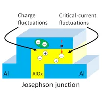

退相干時間漂移
為什麼超導量子電腦需要頻繁校正?
超導量子電腦不是一台校正一次就能長時間穩定運作的機器，量子位元的頻率、能量鬆弛時間 \(T_1\)、相位退相干時間 \(T_2\)、讀出響應與雙量子位元閘參數，仍然會隨時間漂移。因此，實際運行量子處理器時，必須反覆進行校正。
在超導量子電腦中，校正通常包括量子位元頻率、微波脈衝振幅、脈衝長度、相位、讀出閾值、耦合器偏壓與雙量子位元閘條件。這些參數都依賴量子位元當下的頻譜與退相干環境。量子硬體本身具有時間依賴性，超導量子位元是由微影製程製成的人工原子，它會與材料表面的缺陷、Josephson junction 中的氧化層、非平衡態準粒子事件、封裝模態、背景輻射與控制線路中的雜訊耦合。這些環境自由度會改變量子位元的退相干通道，使得昨天量到的最佳參數，今天不一定仍然最佳。
如果量子位元頻率漂移，原本準確的 \(\pi\) pulse 可能不再剛好完成一次位元翻轉。如果 \(T_1\) 下降，量子位元在閘操作或讀出前就有更高機率從激發態衰退回基態。如果讀出 resonator 的響應改變，原本設定好的分類閾值就可能提高誤判率。因此，量子電腦需要頻繁校正，本質上是因為它的操作點與錯誤模型會隨時間改變。
量子位元原本應該只按照我們設計、預期的控制脈衝演化，但實際上它會透過某些物理路徑，把能量或相位資訊洩漏到環境中。這些「資訊洩漏的路徑」稱為「退相干通道」。
|
能量鬆弛通道 |
相位退相干通道 |
|---|---|
|
|

▲ 退相干的來源示意圖。a. 由八個 transmon 量子位元構成的量子位元晶片之光學影像；這些量子位元採用\(Al/AlO_x/Al\) Josephson junctions（JJs），周圍採用鈮（\(Nb\)）微波電路。量子位元間透過諧振器與相鄰量子位元耦合，並各自搭配一個的諧振器用於量子態讀出，並可將訊號多工傳輸至共同匯流排。
b. 退相干可能來自表面與界面上的缺陷層或非晶層，會產生寄生的介電損耗。
c. 超導薄膜與基板中的非平衡態激發，可能由游離輻射、高能射線、或殘留磁場引發。這些噪聲源尤其會產生準粒子、熱聲子與磁通渦旋。
d. 微觀尺度的電荷缺陷與自旋缺陷會造成\(1/f\) 的漲落噪聲，使量子位元電路受到隨時間變化的電場或磁場偏置；若缺陷存在於穿隧層中，還可能導致約瑟夫森接面電感產生變化。
e. 純相位退相干\(T_\phi\)(pure dephasing)來自於環境中的噪聲對量子位元的能階擾動；縱向弛豫退相干 \(T_1\) (longitudinal relaxation)為環境中的擾動對量子位元產生能量交換，產生衰減。
Ref: 10.1038/s41578-021-00370-4

▲ 退相干的來源示意圖。包含控制電路的噪聲、材料核自旋擾動、材料的熱聲子、電荷漲落、電磁波干擾、偏置磁場擾動與磁渦流捕捉。在穿隧層附近，準粒子穿隧事件會嚴重干擾量子位元的特性。
Ref: 10.1557/mrs.2013.229
材料表面與 Josephson junction 是退相干噪聲的主要來源
超導量子位元的電場會分布在金屬邊緣、基板表面、氧化穿隧層、封裝中。若這些區域存在缺陷或污染物，量子位元就可能與它們耦合。特別是在 Josephson junction 附近，氧化鋁穿隧層非常薄，局部原子排列、雜質與缺陷都可能影響臨界電流與微波損耗。
表面吸附分子、殘留光阻、氧化物、污染與結構缺陷都可能形成電偶極漲落。這些微觀自由度的狀態切換，會造成電荷雜訊、頻率雜訊或 \(T_1\) 波動。從校正角度來看，這代表每一顆量子位元都可能有自己的漂移特性，不同晶片、不同製程批次、甚至同一晶片上的不同位置，都可能有不同的穩定性。

▲ 金屬邊緣、基板表面、氧化穿隧層、封裝都會影響、干擾超導量子位元的量子相干特性。b. 約瑟夫森接面非晶 \(AlO_x\) 穿隧層中缺陷類型示意圖，包含原子缺陷TLS二能階系統（原子在缺陷形成的雙位能井間躍遷）、氫雜質與被捕獲的電子。
c. 表面缺陷示意圖，呈現量子位元電極及其天然氧化鋁層的剖面；該氧化層中存在結構性TLS二能階系統。此外，氫（\(H\)）與氧（\(O_2\)）等吸附物會提供表面自旋。製程殘留物，例如光阻、空氣污染物，以及因電路圖案化造成的基板表面非晶化，也是表面退相干擾動的來源。
Ref: doi.org/10.1038/s41534-019-0224-1

▲ 另一篇示意材料中退相干來源的示意研究。包含被捕獲的電子、氫雜質、原子在缺陷形成的TLS二能階系統、還有原子間未配對的懸鍵。
Ref: 10.53829/ntr202411fr1
TLS 缺陷：造成退相干的物理機制模型
Two-level systems，簡稱 TLS，是超導量子位元中常見的材料缺陷模型。如前述可以來自非晶氧化層、表面吸附物、殘留污染、Josephson junction 穿隧層或金屬—基板介面中的微觀結構。這些缺陷可以被視為另一組微小的雙能階系統。當 TLS 的能階差接近量子位元頻率時，量子位元可能把能量轉移給 TLS，導致 \(T_1\) 降低。

▲ 雙位能井形成的簡易TLS模型。物理模型中如果TLS直接與Qubit耦合，會探討耦合強度\(g\)；此外材料中也存在大量的TLS會間接干擾量子系統，常視為背景場擾動來處理。
Ref: 10.1038/s41578-021-00370-4
對可調頻量子位元而言，TLS 會在頻譜中留下可辨識的痕跡。例如，量子位元頻率掃過某個 TLS 時，可能出現avoided corssing、Rabi 頻率異常或局部損耗增加。這也是為什麼量子位元不只是一個計算元件，也是一個敏感的材料探針：透過量子位元的退相干與頻譜變化，可以反推出晶片中缺陷的存在與耦合特性。

▲ Qubit與TLS直接耦合時，如果調整Qubit的能階接近TLS的能階時，會出現兩者能態的混成，這類現象稱作avoided corssing。此時，兩者共振效應很強，Qubit的能量會大量洩露給TLS造成能量衰減的退相干，\(T_1\)會下降。
Ref: 10.1103/PhysRevLett.121.090502
|
 |

|
|---|
▲ 材料中的TLS有很多種，也能透過實驗方法來區分不同種類的TLS。這篇研究討論電子漲落（TLS1~TLS3）和臨界電流漲落（TLS4~TLS5）兩類的TLS現象。
Ref: 10.1103/PRXQuantum.3.040332
\(T_1\) drift：同一顆量子位元的特性會隨頻率與時間改變
TLS 並不一定穩定停在同一個頻率。它們可能受到鄰近缺陷、局部電荷環境、應變場或低頻雜訊影響，導致自己的能階也發生漂移。當 TLS 頻率漂移時，量子位元看到的損耗環境也會漂移。這就是 decoherence time drift 的一個重要物理圖像：不是量子位元單獨在漂，而是量子位元周圍的缺陷環境也在緩慢變動。
能量鬆弛時間 \(T_1\) 描述量子位元從激發態 \(\ket{1}\) 回到基態 \(\ket{0}\) 的時間。若 \(T_1\) 很長，代表量子位元可以較久地保存能量資訊；若 \(T_1\) 變短，閘操作與量測期間發生錯誤的機率就會上升。
但 \(T_1\) 不是一個固定常數。實驗中可以看到，當調整量子位元頻率掃過不同區域時，某些頻率附近會出現明顯的 \(T_1\) 降低。這通常表示量子位元和某些TLS局部缺陷接近共振，使能量更容易從量子位元流向缺陷環境。更重要的是，這些low \(T_1\) 區域本身也會隨時間變化，造成所謂的 decoherence time drift （\(T_1\) drift）。

▲ 這張圖針對時間和頻率空間掃掠進行 \(T_1\) 數值量測，橫軸是調整Qubit的頻率、縱軸是量測不同時間的\(T_1\)表現。固定時間時（固定縱軸），調整可以Qubit頻率可以發現\(T_1\)有較長（藍）和短（紅），\(T_1\)變短表示Qubit有與TLS強耦合。
接著改變時間，可以發現與TLS共振頻率會隨時間變化（可以觀察紅色區域）。可以看出 \(T_1\) 在頻率與時間兩個方向上都不均勻。某些頻率區域長時間保持較低的 \(T_1\)，某些區域則出現漂移、變寬或突然變差。對量子電腦來說，這意味著最佳操作頻率不是永久固定的；它可能需要避開新的損耗區域，或者在校正流程中重新估計錯誤率。
Ref: 10.1103/PhysRevLett.121.090502
本文部分內容透過 AI 協作，經作者編輯審核。
 王培儒
王培儒{kind=link}